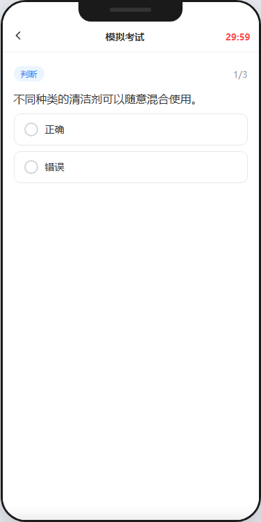
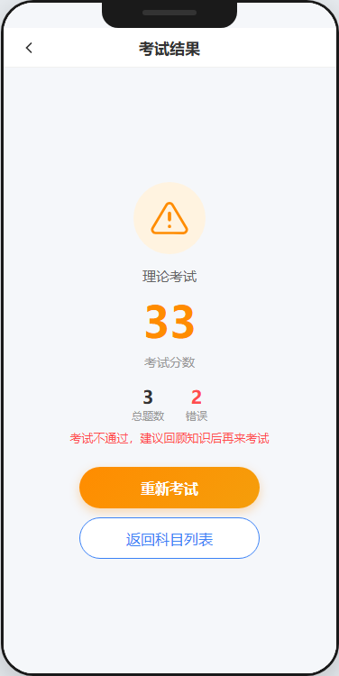
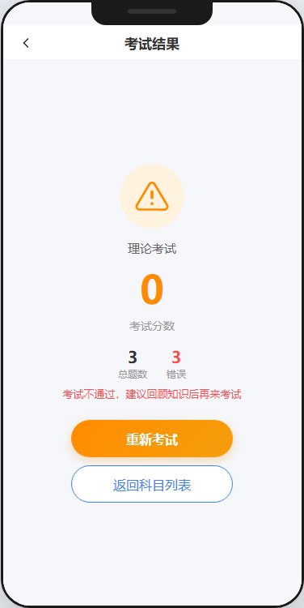

模拟考试 — 顶部红色倒计时，选中仅高亮不显示对错
页面功能
- 红色倒计时：顶部右侧显示剩余时间（30:00），实时递减
- 题目展示：与练习答题页相同的题型和选项布局，但选中后仅高亮，不显示对错
- 答题卡面板：已答（蓝色）/ 未答（灰色），含「交卷」按钮
交互说明
- 手动交卷：点击后弹出确认弹窗，显示未作答题数
- 超时自动交卷：倒计时归零后弹窗提示"考试时间到"，自动提交

练习结果页 — 统计答题成绩
页面功能
- 结果图标：绿色对勾圆形图标 + "本次练习完成"标题
- 统计数据：三个数字横排——总答题数（蓝）、错误数（红）、正确率（绿）
- 操作按钮：「回顾错题」回到答题页仅展示做错的题 +「继续答题」继续后续题目
模拟考试结果页标题为"模拟考试结果"，根据得分是否达到及格线（90分），显示"通过"或"未通过"状态。
5 步引导流程
- 步骤 1 - 账号信息录入：上传头像、填写昵称、上传个人照片（上传后模拟 AI 人像验证，验证失败提示"未检测到人脸"等原因）
- 步骤 2 - 身份证上传：上传正反面，OCR 自动识别姓名、证件号、有效期，过期则红色标签提示
- 步骤 3 - 健康证上传：上传后 OCR 识别有效期，AI 自动审核（90%通过率，1.5秒延迟）
- 步骤 4 - 体检报告上传：上传后 AI 自动审核，通过显示绿色标签，不通过提示重新上传
- 步骤 5 - 背调验证：输入姓名 + 身份证号（可从步骤2自动带入），调用第三方接口验证，接口确认即审核通过
两种使用模式：新用户模式展示全部 5 步；补全模式仅展示缺失材料的步骤。顶部有步骤进度条，每步可"跳过"或"下一步"。

考试结果页 — 显示得分和通过/未通过状态
通过状态
- 绿色奖杯图标 + 大号绿色分数 + 考试名称
- 统计：总题数 | 错误数 + 鼓励文案
- 按钮：「查看答题详情」+「返回科目列表」
未通过状态
- 橙色警告图标 + 大号橙色分数 + 提示文案"建议回顾知识后再来考试"
- 剩余重考次数 > 0 →「重新考试」按钮
- 剩余重考次数 = 0 →「支付重考费」按钮 → 支付成功后重置重考次数
科目一~四全部通过后，自动弹窗提示"恭喜！所有科目已通过，可前往申领执照"，点击「立即申领」跳转执照申领页。